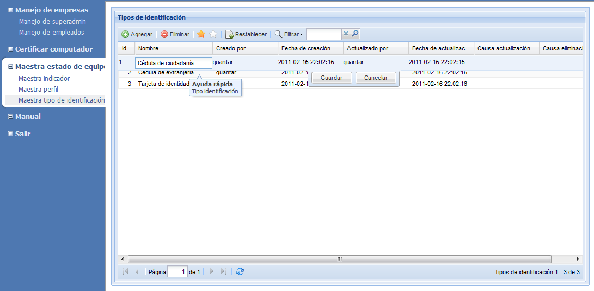
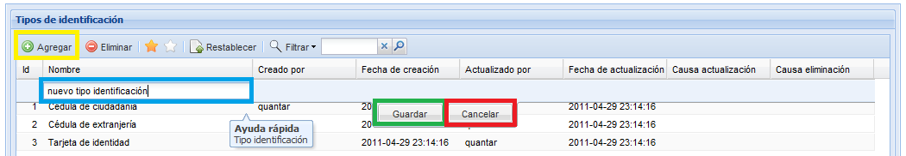
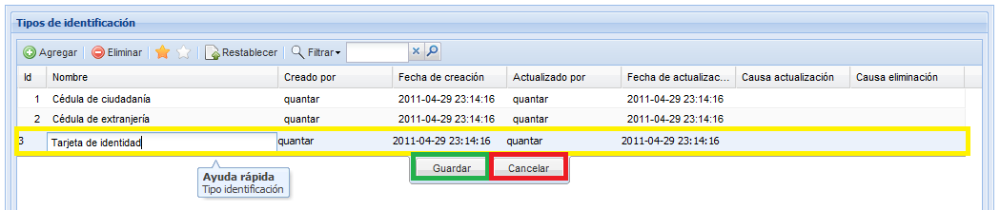

MANUAL DE USUARIO
TPM-QLabs - MAESTRA TIPO DE IDENTIFICACIÓN
Esta información se utiliza para clasificar el tipo de identificación de los empleados.

Figura 1. Pantalla de manejo de tipos de identificación.
Agregar tipo de identificación
Para agregar un tipo de identificación pulse el botón Agregar, diligencie el nombre del nuevo tipo de identificación en la fila que aparece arriba de la lista y pulse el botón Guardar. En la figura 2 se muestran los botónes y el campo de edición.
Actualizar
Para actualizar un tipo de identificación, de doble click sobre el tipo de identificación que desea modificar, edite el nombre y pulse el botón guardar, el sistema le preguntará porque razón desea actualizar esta información, digite la razón y pulse el botón aceptar. Luego el sistema le mostrara un breve mensaje en el que informa del éxito de la actualización. En la figura 3 se pueden identificar los botones desplegables para actualizar un tipo de identificación. En la columna Causa actualización aparecera la última razón de actualización.
Eliminar
Para eliminar un tipo de identificación, seleccione de la lista de tipos el que desea eliminar, y pulse el botón eliminar, el sistema desplegara una pequeña ventana donde le preguntara si realmente desea eliminar el tipo de identificación (como la que se muestra en la figura 4) y porque razón desea eliminarlo, digite la razón y pulse el botón aceptar. Luego el sistema le mostrara un breve mensaje en el que informa del éxito de la eliminación.

Figura 4. Ventana de confirmación de borrado
Restablecer
Bajo el supuesto de que usted haya eliminado un tipo de identificación sin querer, usted tiene la posibilidad de recuperar la información, seleccione la opción para ver los tipos de identificación eliminados (estrella blanca), seleccione de la lista el tipo que desea recuperar, y pulse el botón Restablecer, el sistema le preguntara porque razón usted desea restablecer el tipo, digite la razón y pulse el botón aceptar. Luego el sistema le mostrara un breve mensaje en el que informa si se ha restablecido con éxito el tipo.
Observe que en la columna Causa Eliminación porque fue eliminado el registro. Y en la columna Causa actualización porque se actualizo por ultima vez este registro.En la figura 5 se muestra la ventana de restablecimiento de tipos de identificación y los items mencionados anteriormente.

Figura 5. Pantalla de restablecimiento de información.
Para agregar un tipo de identificación pulse el botón Agregar, diligencie el nombre del nuevo tipo de identificación en la fila que aparece arriba de la lista y pulse el botón Guardar. En la figura 2 se muestran los botónes y el campo de edición.

Figura 2.Pantalla para agregar un nuevo tipo de identificación
Figura 2.Pantalla para agregar un nuevo tipo de identificación
Actualizar
Para actualizar un tipo de identificación, de doble click sobre el tipo de identificación que desea modificar, edite el nombre y pulse el botón guardar, el sistema le preguntará porque razón desea actualizar esta información, digite la razón y pulse el botón aceptar. Luego el sistema le mostrara un breve mensaje en el que informa del éxito de la actualización. En la figura 3 se pueden identificar los botones desplegables para actualizar un tipo de identificación. En la columna Causa actualización aparecera la última razón de actualización.

Figura 3. Pantalla de actualización de tipos de identificación.
Figura 3. Pantalla de actualización de tipos de identificación.
Eliminar
Para eliminar un tipo de identificación, seleccione de la lista de tipos el que desea eliminar, y pulse el botón eliminar, el sistema desplegara una pequeña ventana donde le preguntara si realmente desea eliminar el tipo de identificación (como la que se muestra en la figura 4) y porque razón desea eliminarlo, digite la razón y pulse el botón aceptar. Luego el sistema le mostrara un breve mensaje en el que informa del éxito de la eliminación.
Figura 4. Ventana de confirmación de borrado
Restablecer
Bajo el supuesto de que usted haya eliminado un tipo de identificación sin querer, usted tiene la posibilidad de recuperar la información, seleccione la opción para ver los tipos de identificación eliminados (estrella blanca), seleccione de la lista el tipo que desea recuperar, y pulse el botón Restablecer, el sistema le preguntara porque razón usted desea restablecer el tipo, digite la razón y pulse el botón aceptar. Luego el sistema le mostrara un breve mensaje en el que informa si se ha restablecido con éxito el tipo.
Observe que en la columna Causa Eliminación porque fue eliminado el registro. Y en la columna Causa actualización porque se actualizo por ultima vez este registro.En la figura 5 se muestra la ventana de restablecimiento de tipos de identificación y los items mencionados anteriormente.
Figura 5. Pantalla de restablecimiento de información.